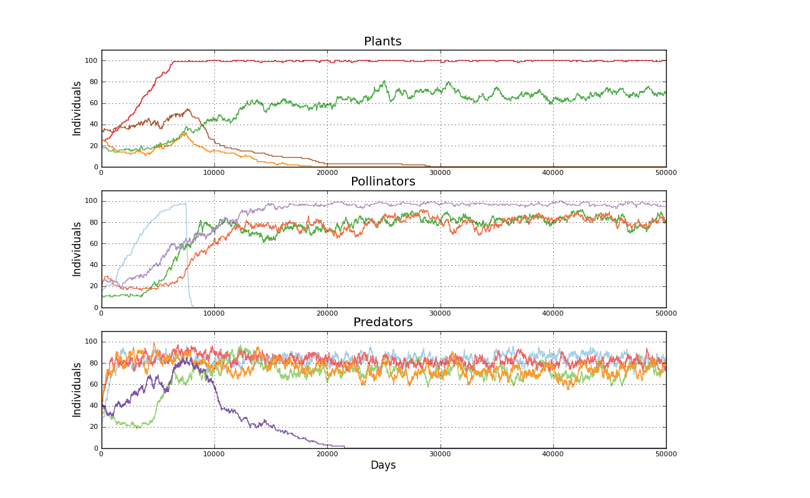

Binomial simulated mutualistic interaction. Input file: 4pim_fw days: 50000
============================================================================
User Comment: Red con foodweb y perturbacion
Mutualist interactions enabled
Plants matrix: 4pim_fw_a.txt
Pollinators matrix: 4pim_fw_b.txt
Predators matrix c:4pim_fw_c.txt
Predators matrix d:4pim_fw_d.txt
Predator species : 5
Plant species: 4
Plant initial populations [25, 18, 25, 35]
Pollinator species: 4
Pollinator initial populations [15, 11, 20, 25]
Forced extinctions. Pollinators species [0], period (years): 1, numperiods: 5, spike: 1.00, rate: -0.900, start: 7500
Pollinator species 0 extinction in day 8142
Plant species 2 extinction in day 18573
Predator species 4 extinction in day 21523
Plant species 3 extinction in day 29088
Elapsed time 36.33 s
Created 2012-07-09 16:56:31.718000
Populations evolution picture
Foodweb effect picture
